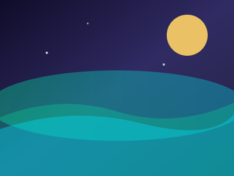
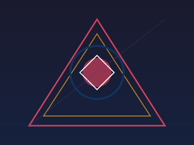
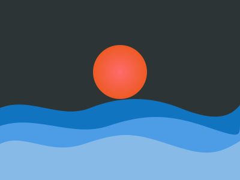
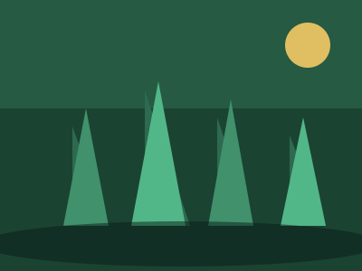
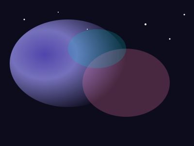

Северное сияние — абстрактная композиция в холодных оттенках с волнами света.

Геометрическая гармония — пересечение треугольников, кругов и линий в контрастных цветах.

Морские волны — многослойный пейзаж с солнцем и плавными синими волнами.

Лесной рассвет — силуэты сосен на фоне зелёного неба и утреннего солнца.

Космическая туманность — цветные облака и звёзды в глубине космоса.
1 / 5